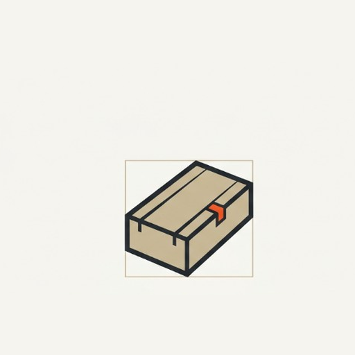
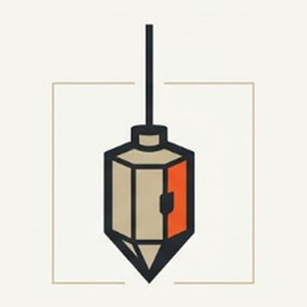
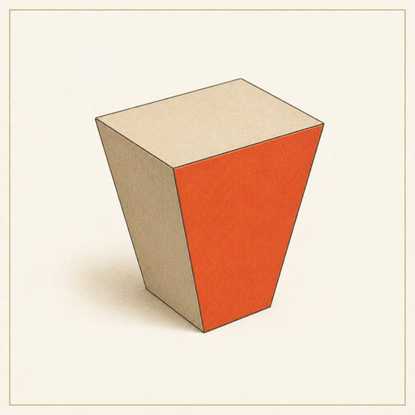

Source of truth для Claude, дизайнера и Cursor. 3D — только гербы сущностей. UI — строгий 2D: бумага, графит, одна киноварная метка. См. также architecture-design-language.md.
Брендовые знаки
Один размер (512×512). Изометрия ~30°, свет сверху-слева, бежевая плитка, киноварная метка на грани. Без букв внутри пиктограммы.

PRODATA
Data Foundations

ENTAN
Enterprise Analyst

CLAVIS
Ontology Engine
Визуальная грамматика
Ключевое: не делай весь UI 3D. 3D — гербы. Интерфейс анализа и provenance — почти терминальный по ясности.
| Уровень | Как выглядит | Зачем |
|---|---|---|
| Брендовые сущности | Один предметный isometric 3D-символ на бежевой плитке, лёгкий наклон | PRODATA — материал; ENTAN — инструмент познания; Clavis — элемент смысла |
| Навигация и управление | Строгий 2D: графитовый текст, тонкие линии, таблицы, статус-чипы | Рабочий, не «игрушечный» |
| Акцент | Одна оранжево-киноварная контрольная метка, не заливка всего | Точка истины: provenance, warning, active trace, invariant violation |
| Контекст | Тёплый каменный / песочный оттенок | Характер и связь с архитектурным лором |
Запреты
Anti-patterns. Любой UI-ревью должен отсекать эти приёмы.
- Чёрные плашки / dark-hero
- Flat-vector вместо объёма у знаков
- Кислотные градиенты
- Glow / neon
- Glassmorphism
- Мозги / нейросети как логотип
- Абстрактные графы / графики как логотип
- Случайные буквы в пиктограммах
- 3D-кнопки и выпуклые контролы
- Игрушечные pill-радиусы без нужды
Токены
Канон: tokens/stone.toml. Hex на доске совпадает с файлом.
#f5f4ef#ffffff#222829#5c6568#c4b494#d8cbae#c9b58e#e85828#c8461c#2a2f30#b42318#1a7f4bРадиусы: sm 6 / md 10 / lg 14 · Линия 1px · Сетка 4 · Focus ring accent 2px · Shadow: none (волосяные линии вместо теней) · Fonts: UI sans + mono для ID/SQL.
Controls kit
Единый 2D-кит для ENTAN / PRODATA / Clavis. Primary = киноварь; secondary = ghost + hairline.
UI-экраны (12)
Мокапы на токенах. Не продакшен-вёрстка продуктов — канон композиции.
keyword=risk_adjustment| Object | Hop | Repo | Status |
|---|---|---|---|
| DW.RISK_ADJUSTMENT | 0 | — | source |
| STG.RISK_ADJ | 1 | etl-core | resolved |
| raw/risk_adj.sql | 2 | etl-core | file |
Нет трасс за выбранный период
Запустите диалог или снимите фильтр по сессии.
Сбросить overrides?
Персональные brick overrides будут удалены. Team pack останется.
Для агентов
Текстовый контракт: architecture-design-language.md. Токены: tokens/stone.toml. Знаки: brand/marks/.